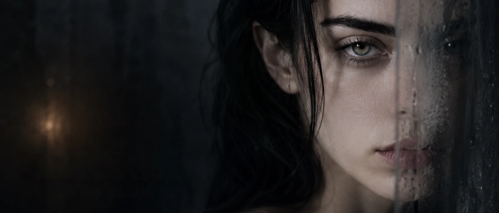

A história começou na convivência e na idealização anteriores à relação. Isso ajuda a explicar por que o álbum trabalha tanto com órbita, luz e antecipação.
Encarte virtual · álbum
O Amor Que
O Amor Que
Achei Merecer
Um disco sobre o ponto em que desejo, projeção e merecimento deixam de ser sinônimos — e o outro volta à escala humana.
202615 canções + bônus mixR. J. Wulf

O disco da projeção
Quando o quase recebe mais luz do que o real.
O ponto biográfico de partida foi uma relação longa que começou na proximidade de uma amizade e passou anos tentando adquirir uma forma estável. Parte importante dessa experiência existia na diferença entre a intimidade privada e aquilo que conseguia — ou não — existir para fora dela.
Mas O Amor Que Achei Merecer não é um relatório dessa relação. Durante a composição, o centro mudou para uma pergunta mais incômoda: quanto do extraordinário estava realmente no outro e quanto havia sido produzido pelo olhar de quem desejava.
É por isso que o disco consegue ser romântico e crítico ao mesmo tempo. Ele reconhece intensidade, desejo e vínculo sem transformar toda intensidade em prova de destino.
O outro pode ser real — e ainda assim carregar uma luz que foi colocada nele.
Do arquivo de escrita
Curiosidades do processo
A tensão entre proximidade íntima e dificuldade de dar forma pública ao vínculo atravessa o disco sem precisar aparecer como exposição biográfica.
Uma das viradas conceituais mais fortes foi deslocar a pergunta de “por que ele era tão especial?” para “quem fabricou parte dessa excepcionalidade?”.
Arquitetura sonora
Dark art-pop com tensão de movimento.
O caderno de produção localiza o álbum em dark art-pop, piano-synth rock e alternative dance-rock. Piano comprimido e baixo em ostinato funcionam como motor; guitarras angulares aparecem entre frases em vez de construir uma parede contínua.
A restrição é importante: nada de piano sentimental conduzindo automaticamente a emoção, nada de clímax triunfal para “resolver” uma história que justamente desconfia das formas fáceis de resolução.
Centro dramático
A produção separa brilho de conforto. Uma faixa pode ser luminosa e ainda operar sob tensão; pode dançar sem transformar a lembrança em celebração. Essa ambiguidade é parte da tese: beleza não prova que a forma funcionava.
Do brilho à desmontagem
a luz cai faixa a faixaFusão Nuclear
escalaA abertura escolhe uma imagem de energia enorme para apresentar um vínculo que se torna difícil de separar da própria identidade.
Portador da Luz
luzA faixa é essencial para entender a arquitetura da idealização: o outro aparece iluminado, mas o álbum posteriormente questiona a origem dessa luz.
Mão no Bolso
Reino do Quase
estadoO “quase” ganha território próprio. Não é intervalo entre duas coisas; é uma forma afetiva capaz de durar e organizar comportamento.
Fratura Compatível
Do Jeito Que Eu Preciso
Vai Acabar Mal
Vinte e Poucos
Nota de Corte
corteO vocabulário de seleção e limite rompe a fantasia de que permanência é sempre virtude. A faixa introduz régua onde antes havia apenas órbita.
Gira em Mim
Nunca Foi Lar
A Lâmpada Era Minha
inversãoO título produz uma das viradas intelectuais mais importantes do disco: recuperar a autoria da luz sem precisar negar que a relação existiu.
Você Era Banal
desidealizaçãoA desidealização não precisa transformar o outro em monstro. “Banal” aqui funciona como retirada de pedestal — uma volta à escala humana.
Assombração de Estimação
Aceito Proposta
Você Era Banal
bônus mix
Ensaio / projeção
O título não acusa apenas o outro. Ele também examina a régua de merecimento da narradora.
“Merecer” é uma palavra perigosa
Ela transforma afeto em sistema de equivalência: se eu sofri, esperei, cuidei ou permaneci, então alguma recompensa deveria existir. O álbum enfraquece essa contabilidade aos poucos. Relações não obedecem a uma matemática moral capaz de garantir retorno.
O quase como ambiente
O “quase” não aparece apenas como falta. Ele pode ser sedutor porque preserva possibilidades que a realidade encerraria. Enquanto nada se define totalmente, a projeção continua encontrando espaço para crescer.

Projeção / vidro
A imagem cresce; a pessoa se afasta.
Vidro, chuva, cartaz e reflexo ampliam o mecanismo central do álbum: a diferença entre a pessoa concreta e a figura construída por desejo, expectativa e memória.
O cartaz transforma uma experiência íntima em escala pública; o vidro do carro mantém a proximidade física e cria uma camada que impede acesso; a colagem recusa uma única versão do rosto. A curadoria visual acompanha a desmontagem progressiva da idealização.
Créditos
ArtistaAMORFA
Formato15 canções + bônus mix
Composição e direçãoR. J. Wulf
Centro sonoroDark art-pop · piano-synth rock · alternative dance-rock
NúcleoProjeção · quase · desidealização · autonomia
CatálogoDiscografia →